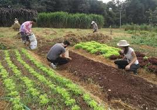
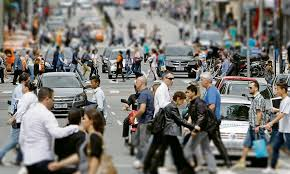

Saiba Mais
Bem-vindo à nossa seção "Saiba Mais", onde você pode descobrir mais sobre o que fazemos e como estamos conectando o campo e a cidade. Explore as seguintes áreas para entender melhor nossa missão, valores e como podemos ajudar você a alcançar seus objetivos.
O Que Fazemos
Nossa missão é criar soluções que integrem a vida rural e urbana, promovendo um desenvolvimento equilibrado e sustentável. Trabalhamos com uma variedade de serviços que vão desde a consultoria rural até o planejamento urbano e eventos culturais.
- Consultoria Rural: Ajudamos comunidades rurais a melhorar suas práticas e sustentabilidade.
- Planejamento Urbano: Desenvolvemos estratégias para tornar as cidades mais eficientes e habitáveis.
- Eventos e Experiências: Organize eventos que conectam a cultura e o meio ambiente.
Nossos Valores
Em tudo o que fazemos, seguimos um conjunto de valores que definem nosso trabalho e interações:
- Sustentabilidade: Comprometidos com práticas que preservam o meio ambiente.
- Inovação: Buscamos constantemente novas formas de melhorar e integrar.
- Comunidade: Valorizamos a colaboração e o impacto positivo nas comunidades que servimos.
Benefícios para Você
Ao escolher nossos serviços, você pode esperar os seguintes benefícios:
- Integração Eficiente: Soluções que conectam o campo e a cidade de maneira harmoniosa.
- Consultoria Especializada: Acesso a especialistas com experiência em diversas áreas.
- Impacto Positivo: Melhoria da qualidade de vida e sustentabilidade em sua comunidade.
Imagens Relevantes
 
Quer Saber Mais?
Se você deseja explorar como podemos ajudá-lo a integrar o campo e a cidade em seus projetos, entre em contato conosco. Estamos aqui para responder suas perguntas e iniciar uma conversa.
Fale Conosco